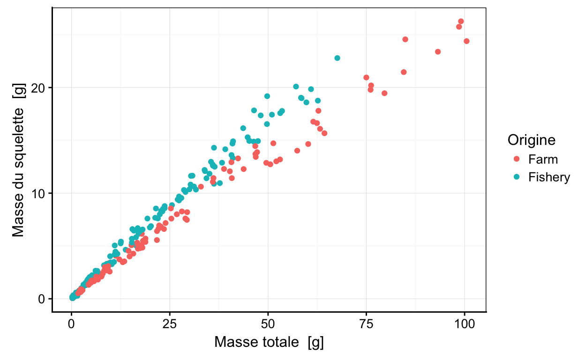
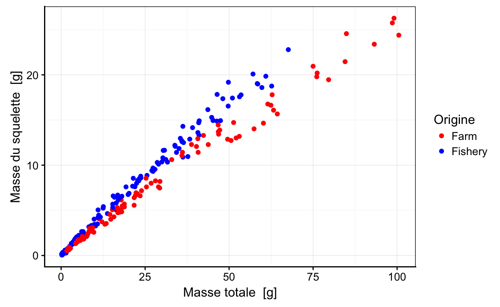
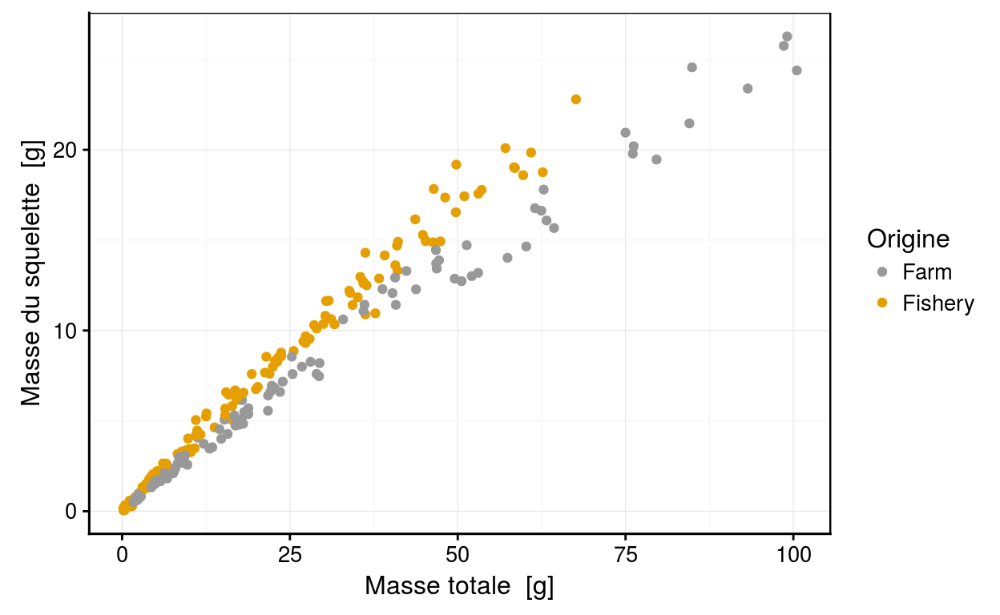
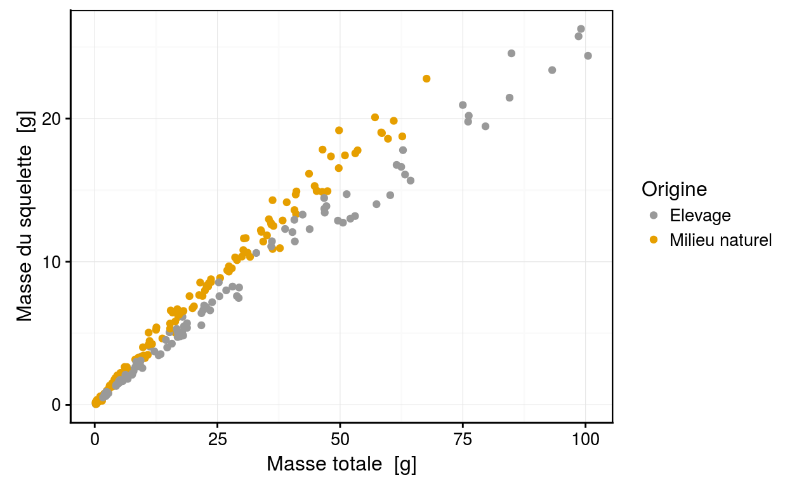

Science des données biologiques
Réalisé par le service d'Écologie numérique des Milieux aquatiques, Université de Mons (Belgique)Préambule
Si vous n’avez jamais utilisé de tutoriel “learnr”, familiarisez-vous d’abord avec son interface ici.

Conformément au RGPD (Règlement Général sur la Protection des Données), nous sommes tenus de vous informer de ce que vos résultats seront collecté afin de suivre votre progression. Les données seront enregistrées au nom de l’utilisateur apparaissant en haut de cette page. Corrigez si nécessaire ! En utilisant ce tutoriel, vous marquez expressément votre accord pour que ces données puissent être collectées par vos enseignants et utilisées pour vous aider et vous évaluer. Après avoir été anonymisées, ces données pourront également servir à des études globales dans un cadre scientifique et/ou éducatif uniquement.
Objectifs
Ce tutoriel interactif a pour objectif de pousser votre curiosité au delà des instructions de base, afin de réaliser un nuage de points plus complexe.
En partant du graphique ci-dessous portant sur Paracentrotus lividus, il est naturel de se demander si l’on ne peut amélorer ce graphique afin de la rendre plus informatif.
Variation de la masse du squelette en fonction de la masse totale de Paracentrotus lividus Lamarck 1816
Le jeu de données sur les oursins comprend eux populations l’une provenant du milieu naturel et l’autre d’élevage. Vous pouvez donc employer la variable origine (origin) afin de rendre votre graphique plus informatif. Vous pouvez cependant aller encore plus loin.
Variation de la masse du squelette en fonction de la masse totale de Paracentrotus lividus Lamarck 1816
Challenge 1
En partant du graphique ci-dessous, sur
chart(urchin, formula = skeleton ~ weight %col=% origin) +
geom_point(na.rm = TRUE)
Tentez de modifier les couleurs employées pour différencier les oursins du milieu naturel et d’élevage. Utilisez la couleur rouge et la couleur bleue.

Reproduisez le graphique ci-dessus
# Not yet...Challenge 2
Tentez de modifier les couleurs employées pour différencier les oursins du milieu naturel et d’élevage. Utilisez la couleur jaune (dont le code est #999999) et la couleur grise (dont le code est #E69F00).

Reproduisez le graphique ci-dessus
# Not yet...Challenge 3

Reproduisez le graphique ci-dessus
Utilisez la couleur jaune (dont le code est
#999999) et la couleur grise (dont le code est#E69F00).Traduisez sur votre graphique Farm (
Elevage) and Fishery (Milieu naturel)
Conclusion
Bravo! Vous venez de terminer votre premier challenge dans un tutoriel “learnr”.
Laissez nous vos impressions sur cet outil pédagogique ou expérimentez encore dans la zone ci-dessous. Rappelez-vous que pour placer un commentaire dans une zone de code R, vous devez utilisez un dièse (#) devant vos phrases.
# Ajout de commentaires
# ...# Not yet...